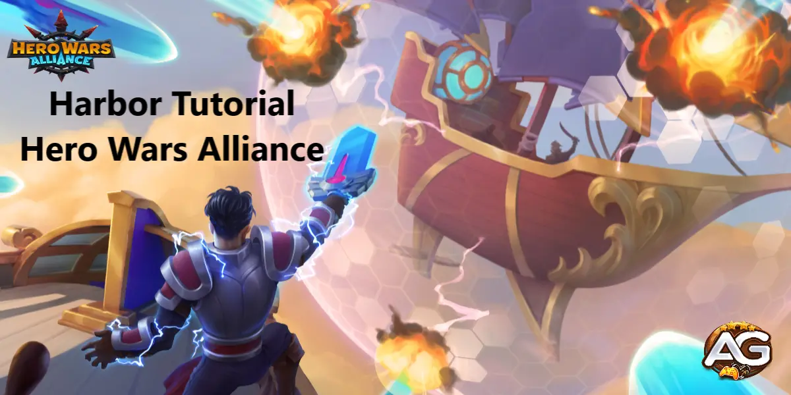

À medida que o palco se abre para a Batalha dos Capitães do Porto em Hero Wars, um novo capítulo na guerra se desenrola ao alcançar o nível 120. No campo de batalha, os navios são adornados com pontos vermelhos simbolizando causadores de dano físico, enquanto pontos roxos significam causadores de dano mágico. Em meio a esse cenário, pontos brancos denotam aumento da taxa de fogo, um aspecto crucial frequentemente negligenciado.

O Papel Vital da Tripulação: A Chave para Dominar as Batalhas no Porto em Hero Wars
Aprofunde-se nas complexidades das habilidades dos capitães, onde Danada aumenta a taxa de fogo e Ginger amplifica o dano. Um alinhamento meticuloso dessas habilidades dita a vitória; posicionar Daredevil em meio a um mar de pontos vermelhos e um branco, enquanto Ginger prospera em meio a uma mistura de pontos vermelhos e brancos, garante desempenho ideal. À medida que as cortinas mágicas da batalha se abrem, Xe'sha emerge como o arauto da destruição arcana.
Revelando a Essência da Guerra Estratégica: Dominando a Dinâmica dos Capitães nas Batalhas do Porto
Além disso, entender a complexa dança dos designs dos navios adiciona outra camada ao tapete tático. O navio do Capitão Jean é afinado para vencer o Capitão Asti, por sua vez, o navio de Asti vence o Capitão Whiskurs, cujo navio triunfa sobre o Capitão Jean. Essa dinâmica de pedra-papel-tesoura se revela plenamente quando todos os capitães alcançam o auge do nível 60, desbloqueando a verdadeira essência da guerra estratégica.
No cadinho das batalhas do Porto em Hero Wars, a maré da vitória flutua e reflui com cada manobra estratégica. Abrace o caos, aproveite o poder do conhecimento e saia vitorioso, pois o Porto aguarda aqueles que ousam conquistar suas profundezas.